Hiking · Nature · Quiet Notes
A small space for the trails, views, and pauses that keep me grounded.
This page is just for the moments outside the screen: places I’ve wandered through, landscapes that stayed with me, and the quieter side of what keeps me curious.
Gallery
Hiking Photos
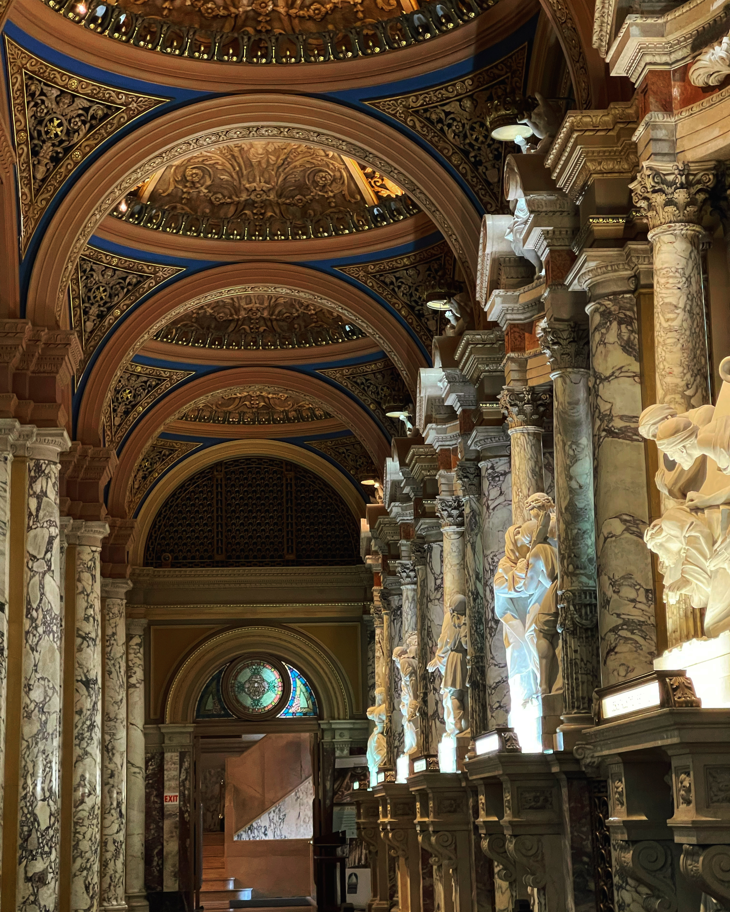
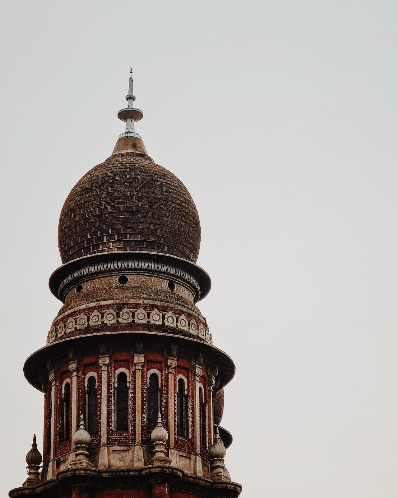

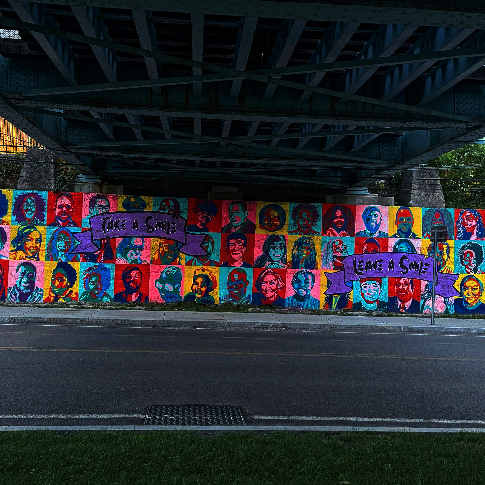
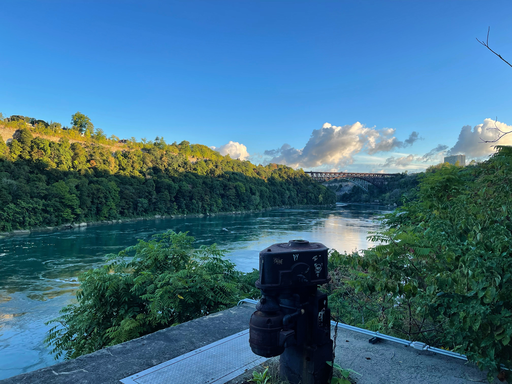
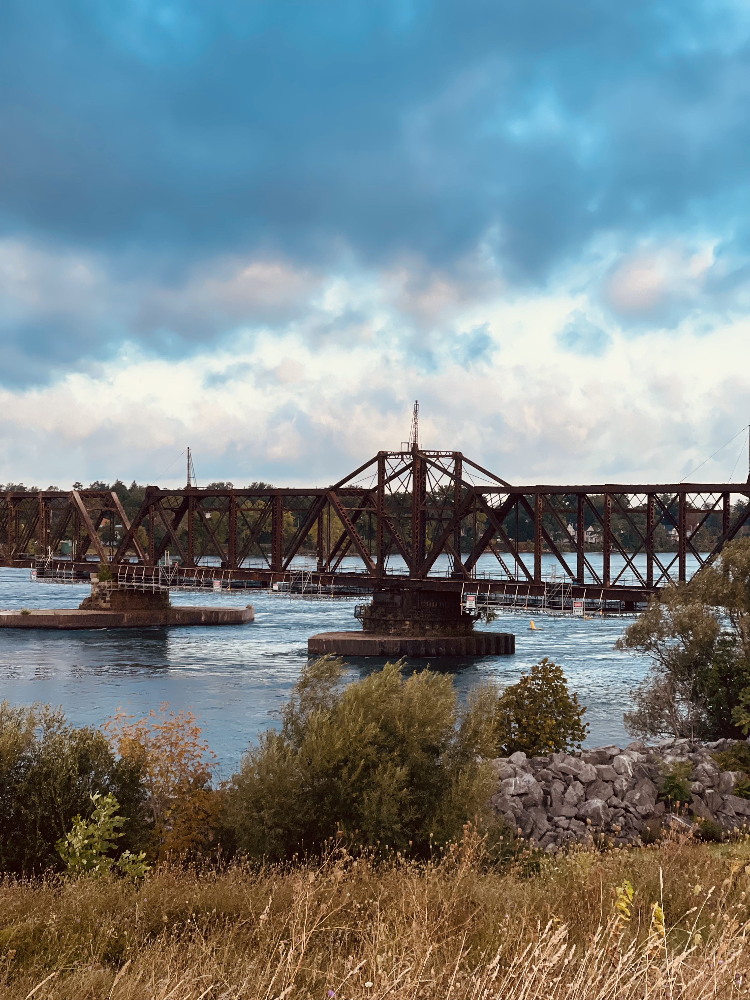
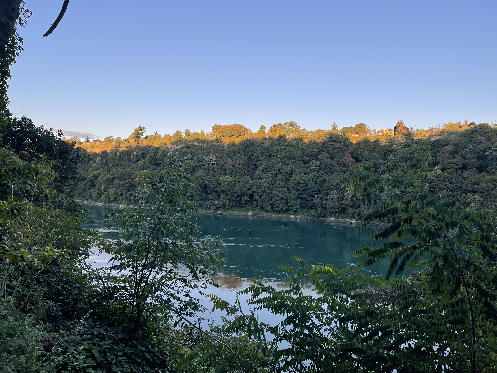
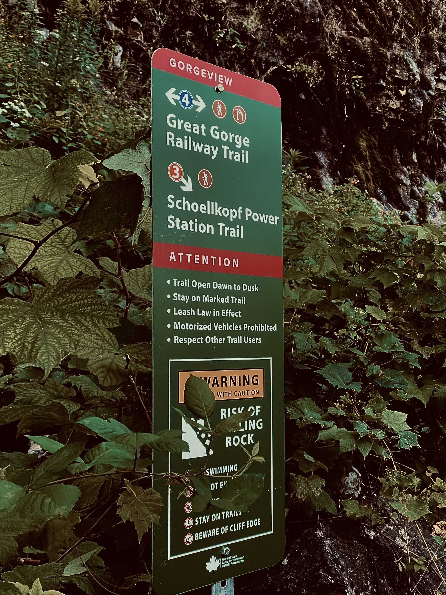


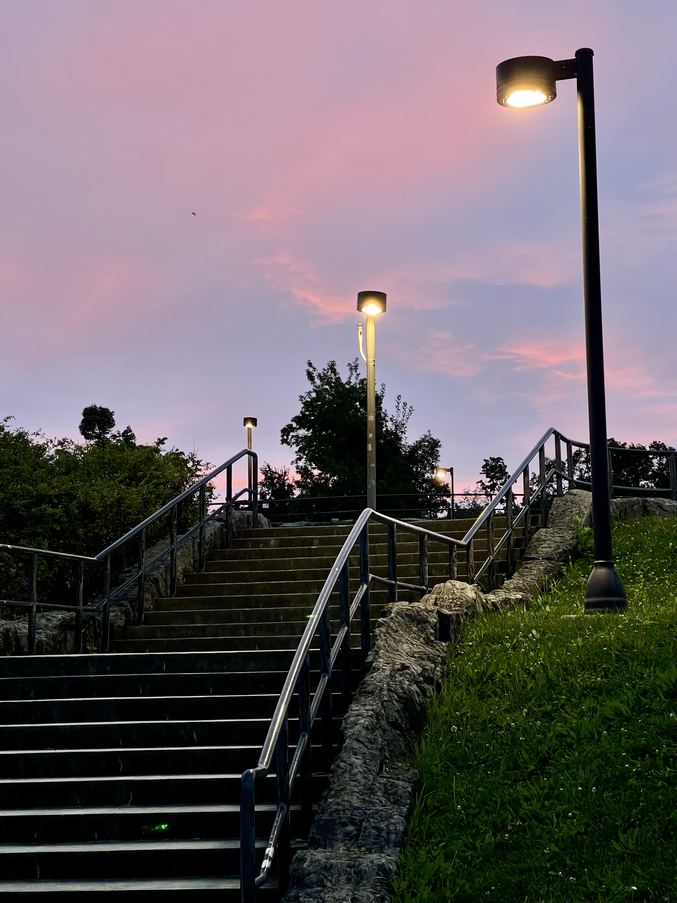


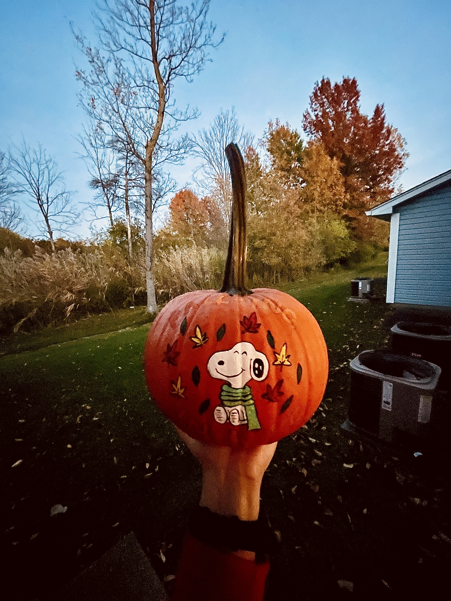


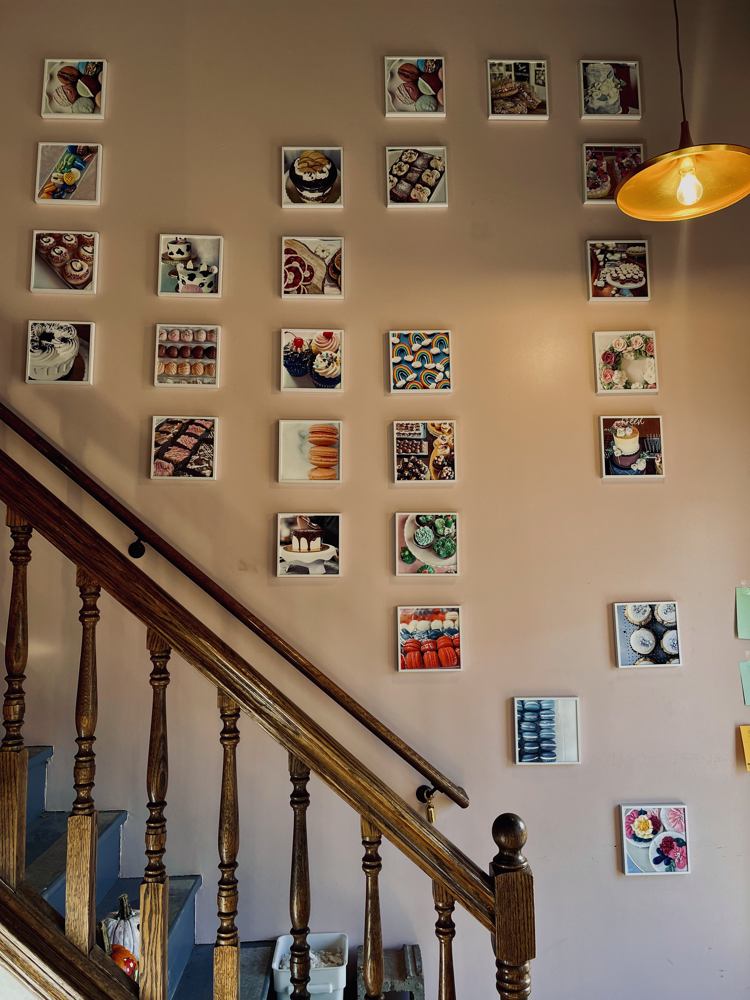
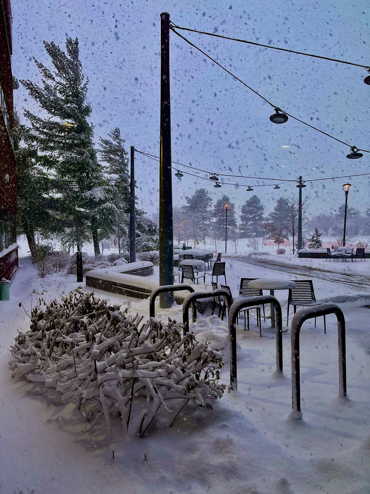